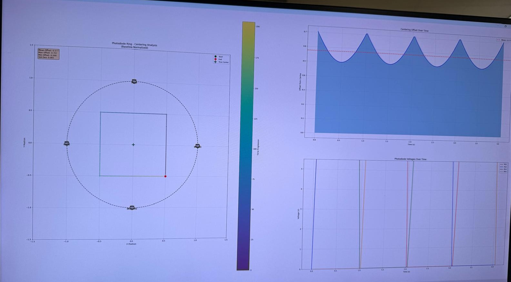

I modified an existing backing plate design used to receive laser light from the transmitter. I created the drawing to have it sent out for counterbores and through-holes for the photodiodes and VCSELs, then hand-tapped every hole in-house with an SM05 tap. Unfortunately I do not have any photos I can display here.
I designed a PCB to provide power to all the photodiodes on the plate, up to 32 at a time, and included PTC fuses on the board in case of a short, after an earlier experience with a short on one of the photodiode boards.
I also used AI to help build a post-processing script that visualizes how centered the laser is on the photodiode ring, using a center-of-mass calculation weighted by the measured voltages. The AI got close on the first pass, but I had to go through the code myself to correct its math.

Visualization software. Test packet shown, not real data.